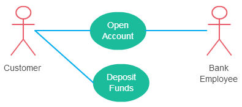
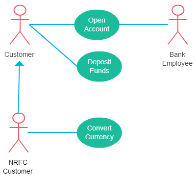
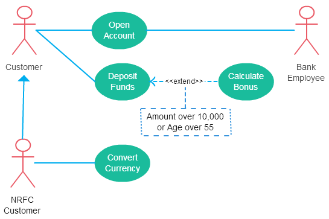
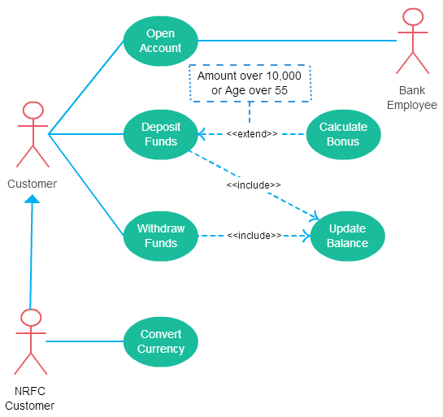

Käitumuslike UML-tüüpide kõige tuntuma diagrammitüübina annavad kasutusjuhtude diagrammid
graafilise ülevaate süsteemis osalevatest osalistest,
nendele osalejatele vajalikest erinevatest funktsioonidest ja
nende erinevate funktsioonide koostoimest.
See on suurepärane lähtepunkt iga projekti arutelu jaoks, sest saab hõlpsalt tuvastada
peamised kaasatud osalejad ja süsteemi peamised protsessid.
Kasutusjuhtude diagrammid on abiks järgmistes olukordades:
1. Enne projekti alustamist saab luua ettevõtte modelleerimiseks kasutusjuhtude diagramme,
et kõik projektis osalejad saaksid aru ettevõtte töötajatest, klientidest ja tegevustest.
2. Nõudeid kogudes saab luua kasutusjuhtude diagramme, et jäädvustada süsteeminõudeid ja
tutvustada teistele, mida süsteem peaks tegema.
3. Analüüsi- ja projekteerimisfaasis saab kasutada oma kasutusjuhtude diagrammidel olevaid
kasutusjuhtumeid ja osalejaid, et tuvastada klassid, mida süsteem nõuab.
4. Testimisetapis saab süsteemi testide tuvastamiseks kasutada kasutusjuhtude diagramme.
Kasutusjuhtumi diagrammis võib olla 5 seosetüüpi:
1. Osaleja ja kasutusjuhtumi seos
2. Osaleja üldistus
3. Pikendus kahe kasutusjuhtumi vahel
4. Kaasamine kahe kasutusjuhtumi vahel
5. Kasutusjuhtumi üldistamine
Vaatame neid suhteid üksikasjalikumalt:
Osaleja ja kasutusjuhtumi seos
See seos on lihtne, siin on mõned asjad, mida tähele panna:
- Osaleja peab olema seotud vähemalt ühe kasutusjuhtumiga.
- Osalejat saab seostada mitme kasutusjuhtumiga.
- Ühe kasutusjuhtumiga saab seostada mitu osalejat.

Osaleja üldistus
Osaleja üldistamine tähendab, et üks osaleja võib pärida teise osaleja rolli.
Järeltulija pärib kõik esivanema kasutusjuhtumid. Järeltulijal on üks või mitu
selle rolliga seotud kasutusjuhtumit.
Laiendame eelmist kasutusjuhtumi diagrammi, et näidata osaleja üldistust:

Pikendus kahe kasutusjuhtumi vahel
Paljud inimesed ajavad kasutusjuhtudel pikendusussuhte segi.
Nagu nimigi viitab, pikendab see põhikasutusjuhtumit ja lisab süsteemile rohkem funktsioone.
Siin on mõned asjad, mida suhte <<extend>> kasutamisel arvestada:
- Pikendatud kasutusjuhtum sõltub pikendavast (põhi)kasutusjuhtumist.
Alloleval diagrammil pole kasutusjuhtudel "Arvuta boonus" ilma
"Sissemaksevahendite" kasutusjuhtumita erilist mõtet.
- Kasutusjuhtumi pikendamine on tavaliselt valikuline ja seda saab käivitada tingimuslikult.
Diagrammil on näha, et laienev kasutusjuhtum käivitub ainult üle 10 000
suuruste hoiuste või üle 55 aasta vanuste korral.
- Pikendatud (baas)kasutusjuhtum peab olema omaette tähendusrikas.
See tähendab, et see peaks olema sõltumatu ega tohi tugineda laieneva kasutusjuhtumi käitumisele.
Laiendame oma praegust näidet, et näidata seost <<extend>>.

Kuigi kasutusjuhtumi pikendamine on enamasti valikuline, pole see kohustuslik.
pikendatud kasutusjuhtumil võib olla ka mittevalikuline käitumine.
See juhtub enamasti keeruka käitumise modelleerimisel.
Kaasamine kahe kasutusjuhtumi vahel
Kaasamise seos näitab, et kaasatud kasutusjuhtumi käitumine on osa kaasatava (põhi)kasutusjuhtumist.
Selle peamiseks põhjuseks on levinud toimingute taaskasutamine mitmel kasutusjuhtumil.
Mõnes olukorras tehakse seda keeruka käitumise lihtsustamiseks.
Siin on mõned asjad, mida tuleb suhte <<include>> kasutamisel arvestada.
- Põhikasutusjuhtum on ilma kaasasoleva kasutusjuhtumita puudulik.
- Kaasasolev kasutusjuhtum on kohustuslik ja pole valikuline.
Laiendame meie pangandussüsteemi kasutusjuhtude diagrammi, et näidata ka kaasamise seoseid:

Kasutusjuhtumi üldistamine
See sarnaneb osaleja üldistamisega. Esivanema käitumise pärib järeltulija.
Seda kasutatakse siis, kui kahe kasutusjuhtumi vahel on ühine käitumine ja
ka iga kasutusjuhtumil on spetsiifiline käitumine.
Näiteks eelmises pangandusnäites võib olla kasutusjuhtum nimega "Maksa arveid".
Seda saab üldistada “Maksa krediitkaardiga”, “Maksa pangasaldoga” jne.
allikad:
Creately
IBM
Creately